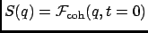

Next: Parameters
Up: Static Coherent Structure Factor
Previous: Static Coherent Structure Factor
Contents
Theory and implementation
This analysis is a shortcut to obtain the static coherent structure factor defined as
. It uses exactly the same procedure as the one defined in section 4.2.5.2.
pellegrini eric
2009-10-06